지적측량일반
측량의뢰 및 절차
수수료
결과부
영수증
공간정보
관련법령
공사업무일반
기타
경계는 공부 기준으로 안내
경계복원측량은 지적공부에 등록된 경계점을 현장에 복원하는 측량입니다. 현장 이용선, 담장, 배수로, 도로 경계가 공부상 경계와 다를 수 있음을 먼저 설명합니다.
현장 확인 포인트
입회자, 인접 토지 이용 현황, 기존 말뚝·담장·옹벽 위치를 확인하고, 항공사진과 연속지적도를 참고자료로 함께 대조합니다.
경계 상담 시 설명할 내용
접수 전
측량 대상 지번, 소유자 또는 대리인 여부, 현장 출입 가능 여부를 확인합니다.
경계분쟁, 담장 설치, 건축 계획 등 의뢰 목적을 확인하여 설명 범위를 정합니다.
성과 안내
측량 결과는 공부상 경계를 현장에 표시하는 것이며, 소유권 분쟁 자체를 판단하는 절차는 아님을 안내합니다.
성과도와 현장 표지를 함께 확인하고, 필요한 경우 인접 소유자 협의 또는 후속 행정절차를 안내합니다.
측량 목적 먼저 정리
분할 목적이 매매, 건축, 도로 확보, 인허가, 상속·정리 중 무엇인지에 따라 필요한 서류와 현장 확인 범위가 달라집니다.
분할측량 시 알아두어야 할 사항
분할측량은 하나의 필지를 둘 이상으로 나누기 위한 지적측량입니다. 측량만으로 공부가 바로 정리되는 것이 아니므로,
분할 목적, 허가 필요 여부, 현장 경계, 성과검사, 토지이동신청까지 순서대로 안내해야 합니다.
접수 전 확인
토지소유자, 공유자, 대리인 위임 여부와 의뢰 대상 지번을 먼저 확인합니다.
분할 목적이 매매, 건축, 도로 확보, 인허가, 상속·정리 중 무엇인지 구분합니다.
분할선, 예정 면적, 진입로, 맹지 발생 여부, 기존 건축물·담장·도로와의 관계를 확인합니다.
개발행위허가, 농지·산지 전용, 건축법상 분할제한면적, 도시계획선 등 사전 협의가 필요한지 검토합니다.
현장 측량 시 확인
입회자에게 기존 경계점, 분할 예정선, 인접 토지와 도로 경계를 현장에서 설명합니다.
공부상 경계와 실제 이용 현황이 다를 수 있으므로 항공사진, 연속지적도, 현장 구조물을 함께 대조합니다.
분할 후 잔여지와 신설 필지의 이용 가능성, 도로 접합, 면적 차이 가능성을 기록합니다.
이해관계가 있는 인접 토지나 공유자가 있으면 현장 안내 내용과 보완 필요사항을 남깁니다.
성과 후 안내
분할측량은 토지이동이 있는 측량이므로 지적소관청의 성과검사 절차를 거쳐야 합니다.
성과검사 완료 후 결과부와 성과도를 교부하고, 토지소유자가 관할 지적소관청에 토지이동신청을 해야 합니다.
허가 조건, 분할 면적, 지목, 지번 부여 내용이 성과도와 맞는지 확인한 뒤 공부 정리와 등기촉탁 단계로 안내합니다.
분할 결과가 인허가 도면과 다르거나 보완 조건이 있으면 허가부서와 다시 맞춘 뒤 접수하도록 설명합니다.
지적현황측량의 목적
지적현황측량은 지상 구조물, 점유 현황, 이용 경계 등을 지적도와 비교하여 현황을 파악하기 위한 측량입니다. 경계 확정이나 분할 자체를 목적으로 하는 측량과 구분해 안내합니다.
상담 시 확인할 자료
건축물, 담장, 도로, 배수로, 묘지, 농지 이용선 등 확인하려는 대상물을 구체적으로 정하고, 현장 사진과 토지이용계획을 함께 검토합니다.
결과 활용 안내
현황측량 성과는 인허가 협의, 점유 현황 확인, 민원 상담의 참고자료로 활용되며, 공부 정리를 위해서는 별도의 토지이동 또는 인허가 절차가 필요할 수 있습니다.
등록전환의 기본 개념
등록전환은 임야대장과 임야도에 등록된 토지를 토지대장과 지적도에 등록하기 위한 절차입니다. 개발, 건축, 산지전용 등 후속 행정절차와 연결되는 경우가 많습니다.
사전 확인 사항
토지 소재, 지목, 면적, 임야도 위치, 인허가 조건, 산지전용 또는 개발행위허가 여부를 확인하고, 등록전환 후 지번·면적·도면 정리 방향을 설명합니다.
성과 후 진행
측량 성과가 정리되면 지적소관청의 검사와 토지이동 정리를 거쳐 공부가 변경됩니다. 인허가 면적과 성과 면적이 다르면 보완 협의가 필요할 수 있음을 안내합니다.
접수 전 기본 확인
의뢰인, 소유자, 대상 토지, 측량 종목, 연락처를 먼저 맞춘 뒤 접수를 진행합니다.
현장 진행 절차
접수, 수수료 납부, 일정 배정, 현장측량, 성과 정리, 결과 교부 순서로 안내합니다.
최신 규정
산출 구조
동일지번 패키지
필지체감
자연재해지역
소면적 경감
차인 적용
대면적 분할
도곽내 면적
연속지·집단지
종목별 적용
각종 감면&유의사항
지적측량수수료 산정기준 등에 관한 규정
2026년 현재 국가법령정보센터에서 확인되는 현행 행정규칙은
「지적측량수수료 산정기준 등에 관한 규정」이며,
교육자료 기준 2026년 수수료는 대부분 종목 2.3% 인상, 경계복원측량은 2.0% 인상으로 안내합니다.
2026년 현재 현행
시행 2025. 12. 24.
국토교통부예규 제450호
2025. 12. 24. 일부개정
대부분 종목 2.3%
경계복원 2.0%
원문에서 확인할 항목
본문: 수수료 산정 기준, 체감·경감·감면 적용 기준, 업무별 적용 원칙을 확인합니다.
부칙: 시행일과 개정 적용 시점을 확인합니다.
별표/서식: 수수료 산정표, 세부 기준, 첨부 서식을 확인합니다.
상담 활용 기준
수수료 감면 상담은 먼저 이 규정의 시행일과 예규 번호를 확인한 뒤 진행합니다.
동일지번 패키지, 필지체감, 자연재해지역, 소면적 경감 등 세부 메뉴의 내용은 이 규정을 기준으로 안내합니다.
시스템 산출 금액과 상담 판단이 다를 때에는 국가법령정보센터 원문과 내부 수수료 산정 화면을 함께 대조합니다.
2026년 상담 포인트
수수료 조정 민원에는 “생산원가 변동과 구성비를 반영한 고시”라는 기준으로 설명합니다.
접수 화면에서 개인사업자·법인사업자 구분과 소면적 경감 대상 여부가 정확히 표시되는지 확인합니다.
감면은 전년과 동일하게 적용하되, 중복감면 가능 여부와 증빙서류 확인을 먼저 합니다.
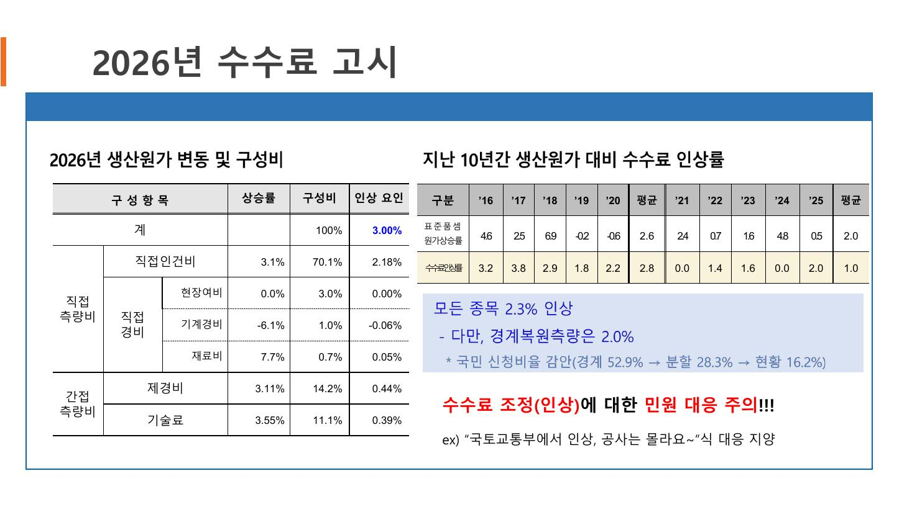
2026년 수수료 고시: 대부분 종목 2.3%, 경계복원측량 2.0% 인상
확인 기준: 국가법령정보센터, 행정규칙 상세 페이지(확인일 2026. 6. 11.)
수수료 구성 및 산출 구조
지적측량수수료는 직접측량비와 간접측량비를 기초로 산출하고, 토지구분·지역계수·면적가산·필지수·개별공시지가 구간 등을 반영해 최종 금액을 결정합니다.
직접측량비
간접측량비
토지·임야·수치 계수
기준면적·가산횟수
지역·공시지가 계수
기본 구성
직접인건비, 현장여비, 기계경비, 재료소모품비가 직접측량비를 구성합니다.
제경비와 기술료는 직접인건비를 기준으로 산정되는 간접측량비 항목입니다.
최종수수료는 항목별 합계에 적용률을 반영한 뒤 필요한 감면·경감 여부를 검토합니다.
면적 기준
신규등록, 등록전환, 분할, 지적현황은 토지·수치 1,500㎡, 임야 5,000㎡를 기준면적으로 봅니다.
경계복원, 도시계획선명시는 토지·수치 300㎡, 임야 3,000㎡를 기준면적으로 봅니다.
대상면적이 기준면적을 초과하면 가산횟수에 따라 계수를 적용하며, 소수점 이하는 절상합니다.
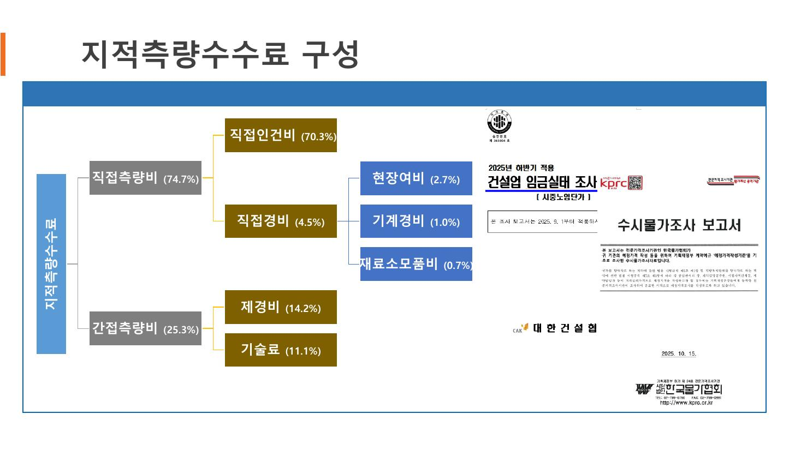
수수료 구성: 직접측량비와 간접측량비의 항목
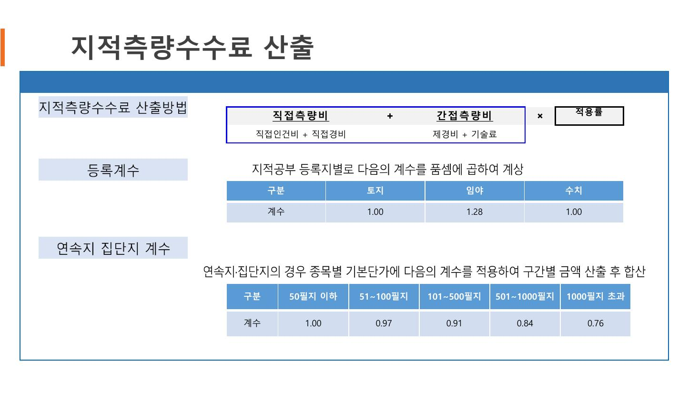
산출 공식: 직접측량비와 간접측량비에 적용률 반영
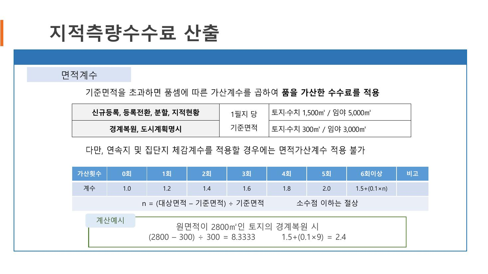
기준면적과 가산횟수: 종목별 면적 기준 확인
동일지번 2종목 이상 지적측량(패키지)
소유자가 같은 동일 지번 또는 연접 필지에 대해 2종목 이상의 지적측량을 신청하고,
한 번의 현장 측량으로 완료되는 경우에 적용합니다.
규정 제24조제1항
원필지 기준 1:1 대응
동일소유자 의뢰
적용 순서
경계복원, 도시계획선명시, 지적현황측량, 분할, 등록전환측량을 순차적으로 검토합니다.
일반업무와 특수업무 구분 없이 동일 기준으로 적용하되 동일소유자가 의뢰한 경우에만 봅니다.
등록전환예정지(유료)와 토지 내 분할 현황(유료)이 함께 있는 경우에는 예외적으로 감면 적용이 가능합니다.
적용 불가
연속지 또는 집단지인 경우에는 패키지 감면을 적용하지 않습니다.
등록전환을 무료처리하고 분할측량을 수반하는 경우에는 적용하지 않습니다.
측량재의뢰 건은 패키지 감면 대상이 아닙니다. 예: 측량재의뢰 + 신규분할.
연접지가 도해지역과 수치지역처럼 측량방법을 달리하는 경우에는 적용하지 않습니다.
주의 사례
차액분할(종목변경) 때 건물현황측량이 수반되면 현황측량 1종목만 측량하는 것으로 보아 감면하지 않습니다.
면적현황과 구조물현황이 동시에 처리되는 경우에도 패키지 감면 대상에서 제외합니다.
취소·반환
경계복원과 분할을 함께 접수한 뒤 분할을 취소하면, 경계복원에서 감면된 금액을 수입 처리하고 분할 차액분을 반환합니다.
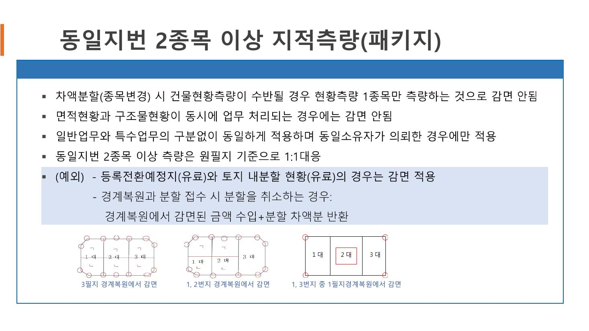
패키지 감면 적용·제외 사례와 원필지 기준 1:1 대응 예시
필지체감 적용
지적소관청별로 지적측량 전체 필지수가 3필 이상 50필지 이하이면 기본단가의 5% 체감을 적용합니다.
규정 제12조
3필 이상 50필 이하
기본단가 5%
분할 후 필지를 기준으로 판단합니다.
51필지 이상이어도 필지체감 적용 수수료가 더 저렴하면 적용 가능합니다.
점·선 현황 등 50% 적용 대상과 무료분은 제외합니다.
분할, 경계복원, 지적현황, 도시계획선명시측량에 적용합니다.
수치·도해 등 측량방법별, 동일 종목별로 각각 적용합니다.
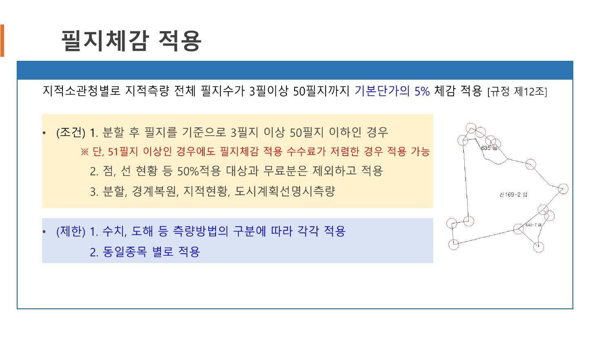
필지체감: 3필 이상 50필 이하 기본단가 5% 체감 기준
자연재해지역 감면
자연재해로 피해를 입은 토지의 피해복구 측량은 피해 정도에 따라 수수료 50% 또는 100% 감면을 검토합니다.
규정 제23조제2항
제3항
제4항
피해사실 확인서가 발급된 토지여야 합니다.
피해복구를 위한 지적측량이어야 하며 재난발생일로부터 2년 이내여야 합니다.
전파, 유실, 전소 등이 확인된 토지는 100%, 그 외 토지는 50% 감면 기준으로 봅니다.
국가·지자체·공공기관 의뢰 건은 감면 적용 대상에서 제외합니다.
2025년 8월 6일 이후 기준은 주택·창고·공장·농축산상업시설 100%, 비닐하우스·농경지 등 50% 감면으로 안내합니다.
2025년 8월 6일 이후에는 횟수 1회를 기준으로 하며, 재난피해 필지에 신축할 수 없는 경우 이전 필지에 적용합니다.
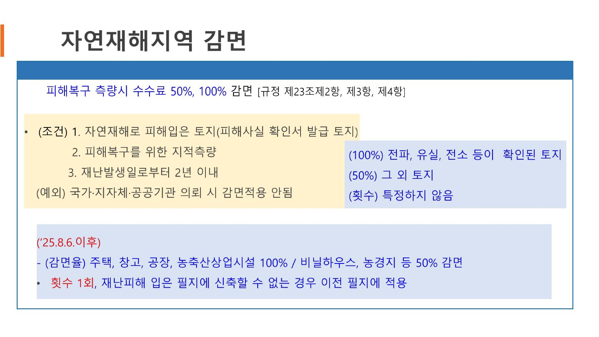
자연재해지역 감면: 피해복구 측량, 피해 정도, 적용 기간 확인
소면적 경감 적용
개인이 신청하는 소면적인 필지는 종목별 기본단가의 10% 감면을 적용합니다. 신청인 기준과 영수증 발행 명의를 함께 확인해야 합니다.
규정 제8조제2항
기본단가 10%
소급 적용 불가
구분
조건
적용 종목
토지·수치
분할 후 면적이 토지대장등록지 60㎡ 이하
신규등록, 등록전환, 분할, 지적현황(분할식)
임야
분할 후 면적이 임야대장등록지 200㎡ 이하
신규등록, 등록전환, 분할, 지적현황(분할식)
등록전환
등록전환 면적이 200㎡ 이하
등록전환
적용 판단 사례
개인토지를 법인이 대리 신청하는 경우: 감면하지 않습니다.
다만 영수증을 개인 명의로 발행하는 경우: 감면 가능합니다.
법인소유 필지를 개인이 신청하는 경우: 감면 가능합니다.
개인사업자 영수증 발행: 감면 가능, 법인사업자 영수증 발행: 감면 불가.
신청인 기준
소유자가 국공유지·법인·개인인 경우 모두 개인(사업자) 신청은 감면 가능으로 봅니다.
국가·지자체 또는 법인사업자가 신청하는 경우에는 감면하지 않습니다.
상담 때 신청인 기준과 수익자 부담 원칙을 함께 안내합니다.
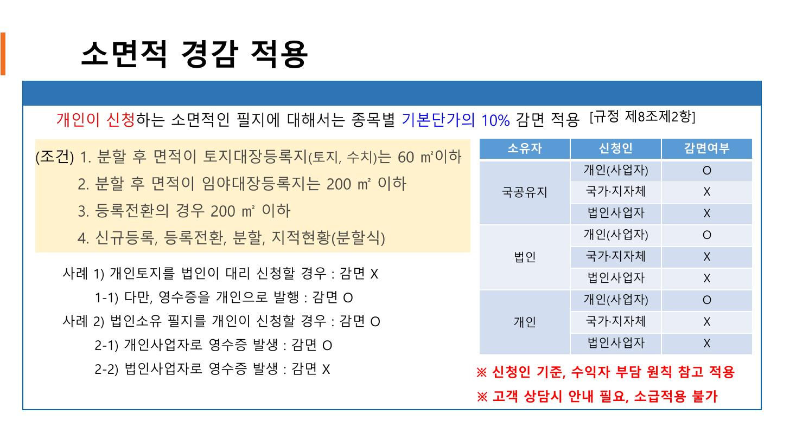
소면적 경감: 신청인·영수증 기준에 따른 감면 여부
차인 적용
면적이 5,000㎡ 이상인 필지를 분할하면서 분할 후 면적이 분할 전 면적의 80% 이상이 되는 경우에는 차인 방식을 검토합니다.
규정 제8조제1항제1호
기본단가 적용
20% 미만이 되는 필지의 면적을 먼저 측정한 뒤 분할 전 면적에서 측정 면적을 빼는 방식입니다.
동일한 측량 결과도에서 측정할 수 있는 경우에 한해 검토합니다.
좌표면적계산법으로 면적을 측정하는 경우, 해당 필지 주위 전체 측량이 수반되는 경우에는 제한됩니다.
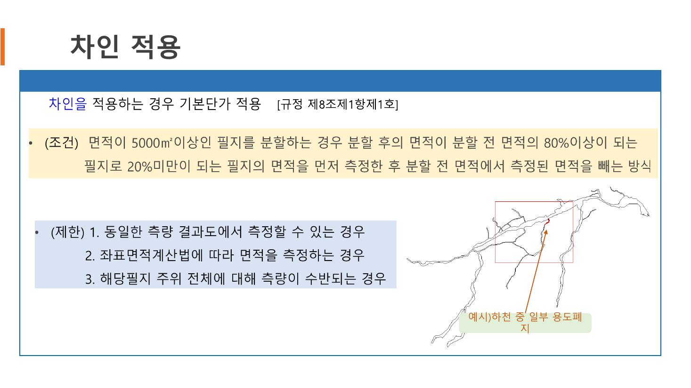
차인 적용: 80% 이상 잔여 필지와 일부 면적 측정 방식
규모가 큰 필지의 분할
분할 후 필지의 면적이 토지 3만㎡, 임야 10만㎡ 이상이면 각각 해당 면적에 해당하는 수수료를 적용합니다.
규정 제8조제1항제2호
토지 3만㎡
임야 10만㎡
토지는 3만㎡, 임야는 10만㎡에 해당하는 수수료 기준으로 안내합니다.
해당 필지 주위 전체에 대한 측량이 수반되는 경우에는 예외적으로 면적가산계수를 적용합니다.
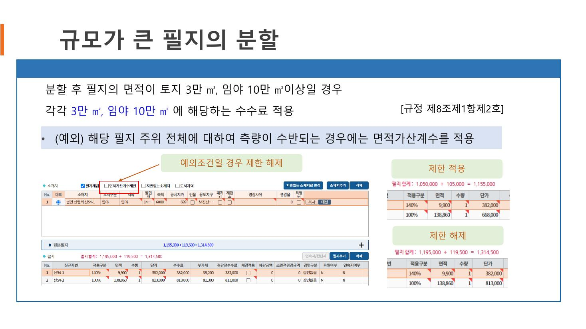
대면적 분할: 토지 3만㎡, 임야 10만㎡ 이상 기준과 예외 조건
도곽내 면적 적용
여러 도곽에 걸쳐 있는 1필지의 일부만 측량하는 경우에는 해당 도곽 내 면적만 가산계수에 반영합니다.
규정 제8조제1항제3호
도곽 내 면적
도로, 하천, 구거, 제방, 철도용지, 수도용지가 대상입니다.
분할, 분할식 지적현황, 경계복원 업무에서 검토합니다.
2도곽에 걸쳐 측량하면 2도곽 내 면적을 합산해 적용합니다.
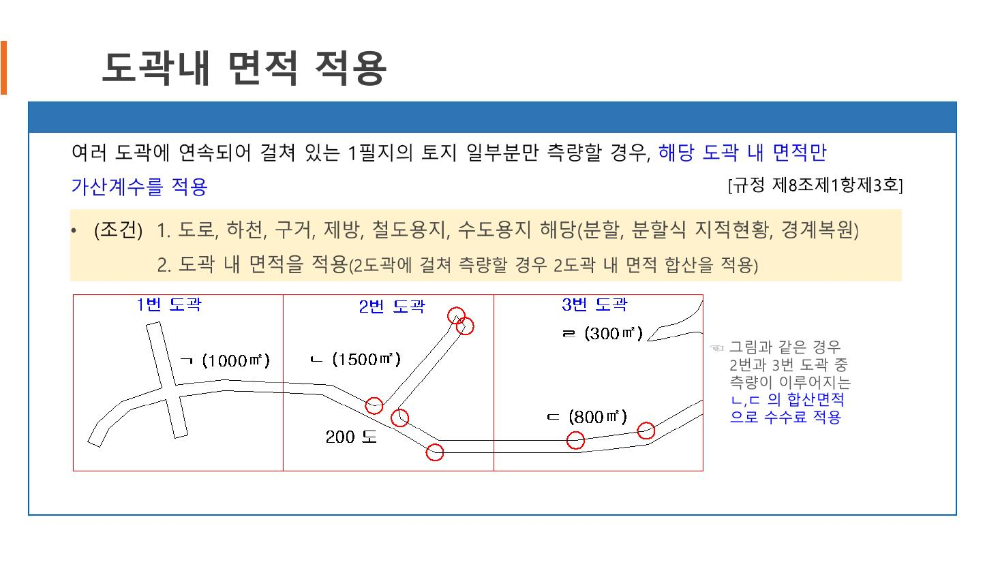
도곽내 면적: 여러 도곽에 걸친 일부 측량 시 합산 기준
연속지·집단지 체감계수
지적소관청별로 각각 51필지 이상인 경우에는 기본단가에 체감계수를 적용합니다.
규정 제11조
51필지 이상
도해·수치 각각 적용
신규등록, 등록전환, 분할, 경계복원, 지적현황, 도시계획선명시, 축척변경, 지적불부합지조사에 적용합니다.
동일 소관청의 연속지는 적용할 수 있습니다.
군지역 연속지 단가가 낮으면 군지역 41필지는 1~50구간으로 보고, 시지역 32필 중 9필은 1~50구간, 23필은 51~100구간처럼 구분해 안내합니다.
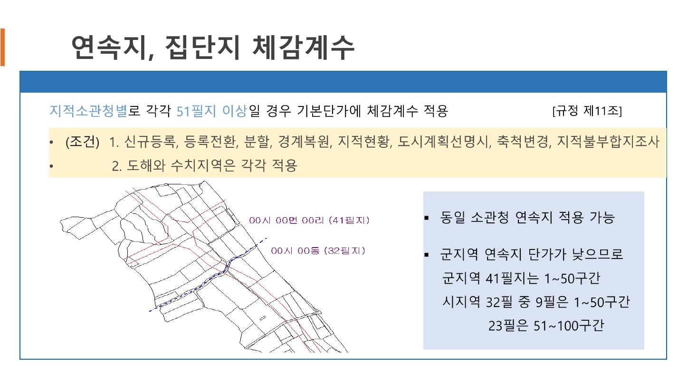
연속지·집단지 체감계수: 소관청별 51필지 이상 적용
종목별 수수료 적용
종목별 수수료는 등록전환, 분할, 경계복원, 지적현황, 지적확정, 재의뢰 측량처럼 업무 목적과 성과 형태에 따라 적용 기준이 달라집니다.
등록전환
분할측량
경계복원
지적현황
지적확정
재의뢰
분할측량
소유권 이전 목적 분할, 차액분할, 현황측량 동시 처리 여부를 구분합니다.
공부정리 여부와 선행 분할 이력에 따라 분할수수료, 내업품, 차액분할 적용이 달라질 수 있습니다.
분할선 변경·추가·삭제는 단순 필지 수가 아니라 실제 업무 범위와 측량 성과를 기준으로 판단합니다.
경계복원측량
동일 소유자, 동일지목, 연접필지 여부를 확인하되 국유지와 위임장 필지는 동일인 소유로 보지 않는 사례가 있습니다.
행정구역이 다르면 합병 조건은 충족해도 행정구역으로 합병할 수 없는 경우를 가정해 수수료를 적용합니다.
분할측량과 연계되는 경계복원은 실제 분할수수료 적용 필지 수를 함께 검토합니다.
지적현황·지적확정
지적현황은 구획, 선, 건축·구조물·점유형태 등 현황 종류를 먼저 나눕니다.
지적확정측량은 중심점·가구점·필계점 말박기 별도 산정, 사업 종류별 적용률, 최소면적 기준을 확인합니다.
2025년 개정 기준으로 관광농원·개간 등 일부 토지개발사업은 최소면적 5,000㎡ 기준을 확인합니다.
재의뢰 측량
지적측량 완료 후 12개월 이내 경계점 표지 재설치 요구는 기본단가의 90%~50% 감면을 검토합니다.
분할·지적현황측량은 선현황측량 지정 130% 기본단가를 기준으로 판단합니다.
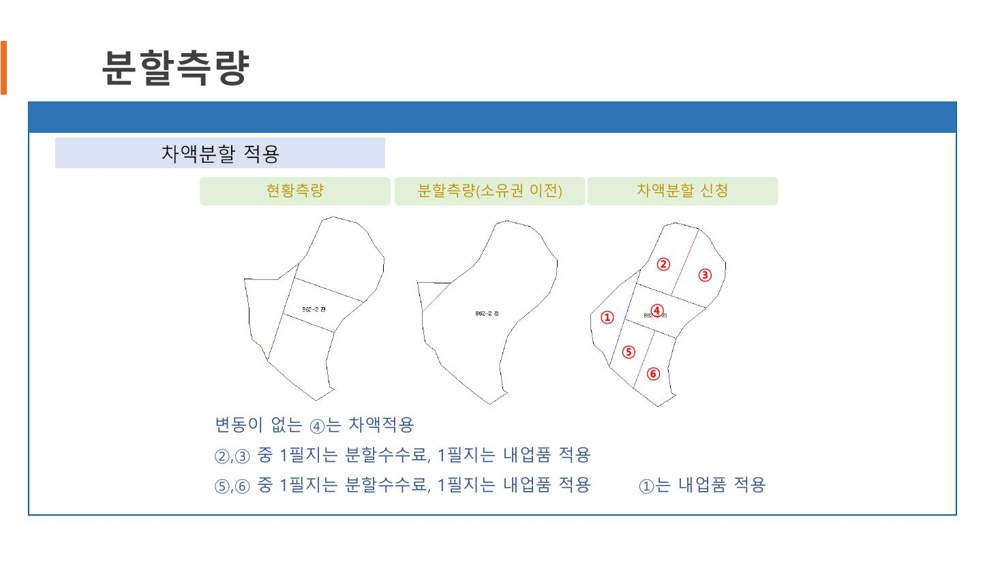
분할측량: 현황측량, 소유권 이전 분할, 차액분할 신청 흐름
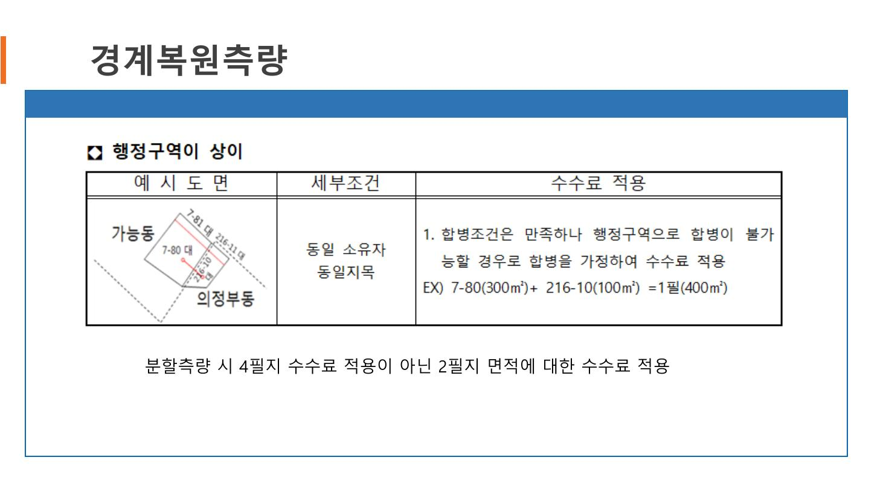
경계복원측량: 행정구역이 다른 경우 수수료 적용 예시
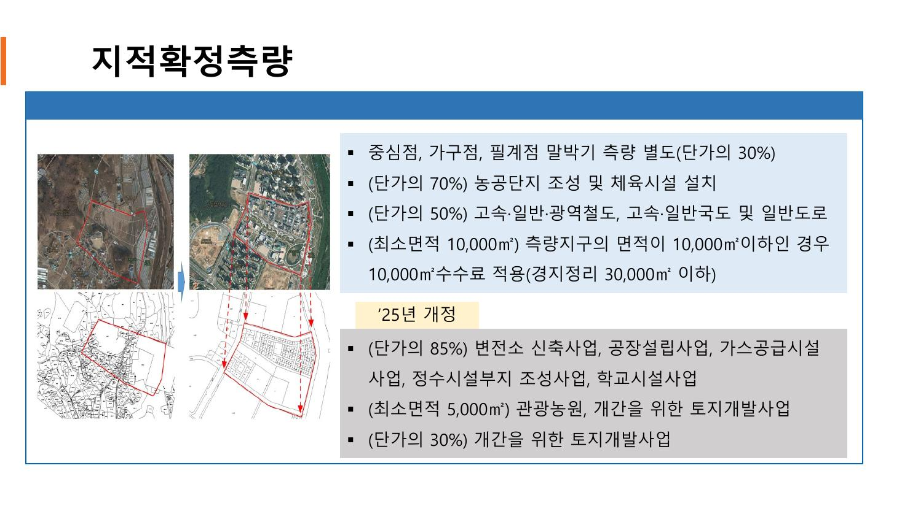
지적확정측량: 적용률과 최소면적 기준
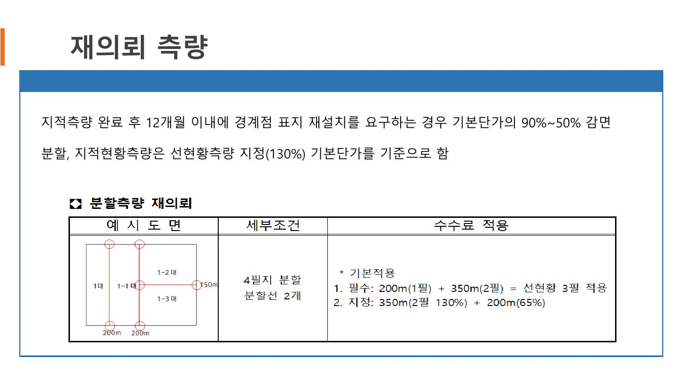
재의뢰 측량: 완료 후 12개월 이내 재설치 요구 감면
각종 감면&유의사항
감면 상담은 적용 사유만 보는 것이 아니라 중복감면 가능 여부, 증빙서류, 세금계산서 발행 여부, 신청인과 소유자 관계까지 함께 확인해야 합니다.
오적용 주의
국가유공자 30%
중복감면 확인
증빙서류 확인
세금계산서 발행 주의
오적용이 잦은 항목
비활성화된 경감사유나 삭제된 적용구분을 그대로 적용하지 않도록 접수 화면을 확인합니다.
종전분할, 공유토지분할 등 삭제된 적용구분은 상담·접수 때 사용하지 않습니다.
소면적, 필지체감, 연속지, 차액분할, 패키지는 서로 중복 가능 여부가 다르므로 표를 기준으로 확인합니다.
증빙과 발행 기준
국가유공자·장애인 감면은 본인 소유와 신청인 관계, 위임장 제출 여부, 증빙서류를 확인합니다.
세금계산서를 발행하는 경우 감면이 제한되는 항목이 있으므로 영수증 발행 명의를 먼저 정합니다.
농업기반시설, 새뜰마을사업, 행복나눔측량, 자연재해지역은 사업대상 필지와 감면율을 분리해 안내합니다.
국가유공자 감면
감면율: 해당 연도 고시 수수료 중 기본단가의 30%를 감면합니다.근거: 「지적측량수수료 산정기준 등에 관한 규정」 제23조제4항을 확인합니다.적용업무: 국가유공자 또는 그 유가족이 신청하는 지적측량에 적용합니다.증빙서류: 국가유공자증 또는 국가유공자 확인서, 국가유공자 유가족증 또는 유가족 확인서를 확인합니다.
국가유공자 감면 대상과 유의사항
「국가유공자 등 예우 및 지원에 관한 법률」 제4조·제5조에 따른 국가유공자와 유가족 중 배우자, 자녀, 부모를 확인합니다.
「독립유공자예우에 관한 법률」 제5조에 따른 독립유공자와 유가족 중 배우자, 자녀, 손자녀를 확인합니다.
무공수훈자, 보국수훈자, 상이등급 제7급과 그 유가족은 감면 대상에서 제외합니다.
의뢰인이 개인인 경우에 한해 적용하며, 사업자나 문중 등의 대표자 신청은 적용하지 않습니다.
확인서 발급 대상자에 한정하며, 참전유공자는 유가족 확인서 발급이 불가하므로 본인에 한정해 검토합니다.
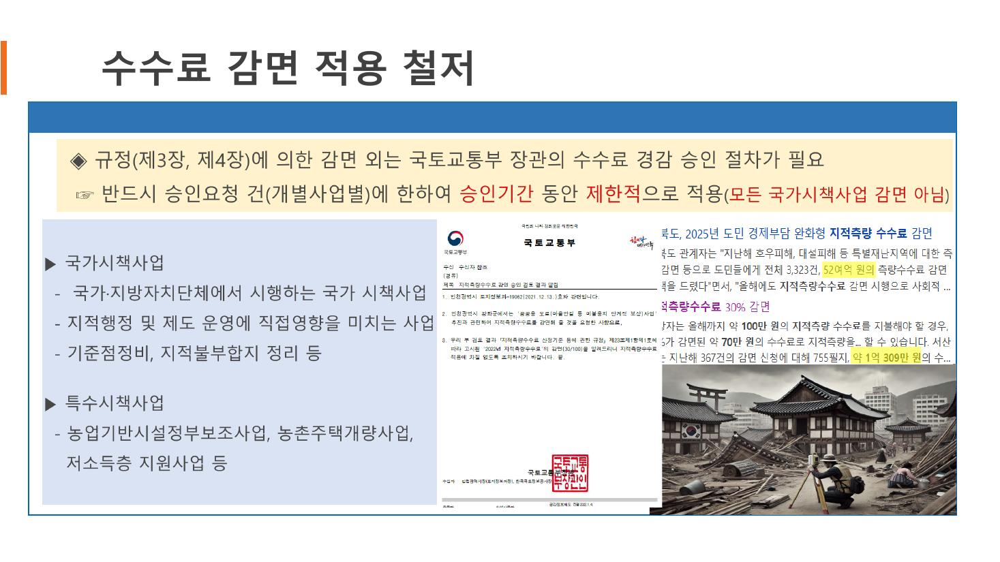
수수료 감면 적용 철저: 상담·접수 단계 확인 흐름
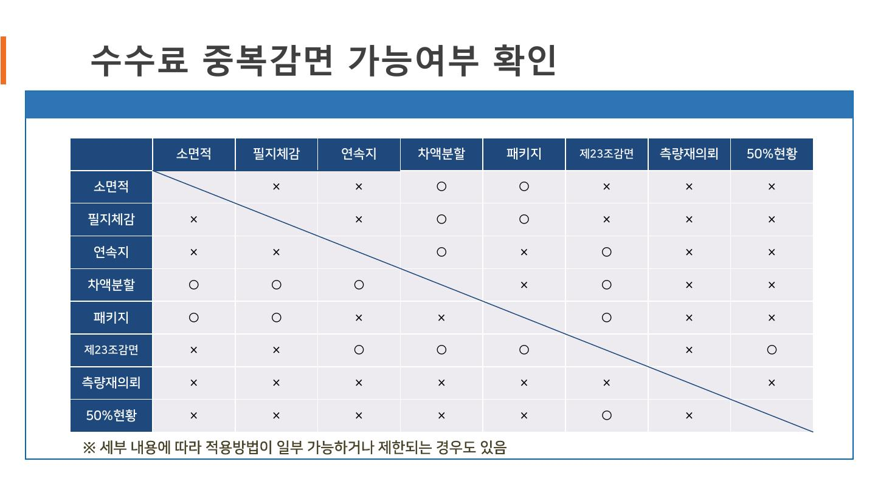
중복감면 가능여부: 감면 항목 조합별 적용 가능 표
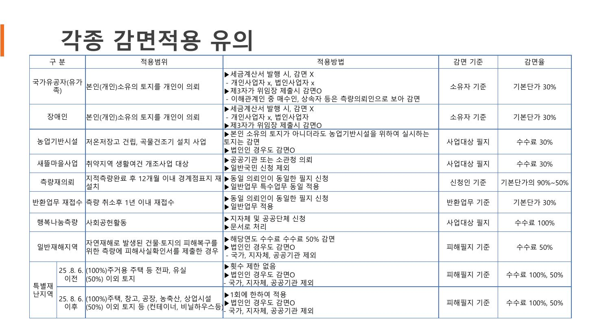
각종 감면적용 유의: 국가유공자, 장애인, 사업대상 필지 감면
교육자료 출처: 2026년 지적측량수수료 교육.pdf
결과부 교부
측량성과도와 결과부는 목적에 맞게 교부하며, 허가나 토지이동 신청 자료로 활용됩니다.
보관과 재발급
성과 자료 보관 위치와 재발급 가능 여부를 확인해 민원 안내에 활용합니다.
영수증 발행
납부 방식에 따라 영수증 발행 주체와 확인 경로가 달라질 수 있습니다.
입금 확인
가상계좌 입금은 수입일자와 접수일자를 구분해 확인하고, 누락 시 수납 내역을 재조회합니다.
지도와 항공사진 대조
연속지적도, 항공사진, 토지이음 지도는 같은 지번 기준으로 비교해야 판단 오류를 줄일 수 있습니다.
좌표와 경계
지도상 위치는 참고용이며, 실제 경계 확정은 지적측량 성과를 기준으로 안내합니다.
부안군 건축인허가 가이드북
연결 사이트: https://agent-custom.vercel.app
법령과 조례 확인
용도지역 행위제한은 법령뿐 아니라 도시계획조례와 지자체 운영 기준까지 확인합니다.
근거 조항 기록
상담 시 확인한 법령명, 조항, 적용 사유를 기록해 후속 민원에 대비합니다.
업무처리 시스템
접수, 수납, 일정, 결과 교부 상태를 같은 건 기준으로 확인해 누락을 줄입니다.
민원 안내 기록
전화 안내, 보완 요청, 일정 변경 내용은 상담일자와 담당자를 함께 남깁니다.
묘지·자연장지
농막·가설건축물
분쟁 가능성
상담 메모
알아두어야 할 내용: 묘지(분묘)와 자연장지 허가면적
가족장지와 종중·문중장지는 안치 대상과 설치 목적이 달라 허가면적 상한이 다릅니다.
구체적인 숫자는 장사법 본문보다 같은 법 시행령 별표에 정리되어 있으며, 전통적인 묘지와
자연장지, 수목장림은 서로 다른 별표를 확인해야 합니다.
구분
묘지(봉분·평분)
자연장지·수목장림
개인
30㎡ 이하
자연장지 30㎡, 수목장림 100㎡ 미만
가족
100㎡ 이하
100㎡ 미만
종중·문중
1,000㎡ 이하
2,000㎡ 이하
장사법에서 확인할 근거
사설묘지: 장사법 제14조, 시행령 제15조, 시행령 별표 2를 확인합니다.가족묘지: 가족당 1개소, 면적 100㎡ 이하가 기준입니다.종중·문중묘지: 종중 또는 문중당 1개소, 면적 1,000㎡ 이하가 기준입니다.사설자연장지: 장사법 제16조, 시행령 제21조제1항, 시행령 별표 4를 확인합니다.수목장림: 시행령 제21조제2항, 시행령 별표 5를 함께 확인합니다.
국토계획법에서 확인할 근거
개발행위허가: 국토계획법 제56조제1항제4호는 토지 분할을 개발행위허가 대상으로 규정합니다.분할제한면적 미만: 시행령 제51조제1항제5호나목은 건축법 제57조의 분할제한면적 미만 분할을 허가 대상으로 봅니다.묘지 예외: 시행령 제56조제1항 관련 별표 1의2 제2호 라목(2)(가)는 녹지·관리·농림·자연환경보전지역 안의 기존묘지 분할을 예외 사유로 둡니다.운영지침: 개발행위허가운영지침의 토지분할 세부기준도 기존묘지 분할을 소규모 분할 검토 근거로 함께 확인합니다.
묘지 조성을 위한 토지 분할 허가 면적
토지 분할 민원에서 가장 자주 부딪히는 부분은 장사시설의 법정 허가면적과
「건축법」 제57조의 분할제한면적이 서로 맞지 않는 경우입니다. 예를 들어 녹지지역의
최소 분할제한면적은 200㎡인데, 가족묘지를 100㎡로 조성하려면 분할제한면적 미만이 되어
원칙적으로는 분할이 어려워 보일 수 있습니다.
다만 묘지와 자연장지 같은 장사시설은 목적과 허가 관계를 함께 보아 예외 검토가 필요합니다.
단순히 면적만 보지 말고 기존 묘지인지, 신규 장사시설 설치인지, 장사시설 허가 또는 신고가
수반되는지를 먼저 구분합니다.
기존 묘지의 분할
「개발행위허가운영지침」 및 각 시·군 도시계획조례에 따라 녹지·관리·농림·자연환경보전지역 안에서
기존 묘지를 분할하는 경우에는 분할제한면적 미만이라도 개발행위허가를 통해 토지 분할이 가능합니다.
현장에서는 200㎡ 또는 60㎡ 등 해당 지역의 조례 기준을 함께 확인합니다.
신규 장사시설 설치
신규 가족묘지 100㎡ 또는 종중·문중묘지 조성을 위해 분할하는 경우에는 장사시설 설치 허가 또는
신고가 수반될 때 해당 장사시설의 법정 허가면적에 맞춰 분할을 검토합니다. 이 경우 개발행위허가,
농지·산지 전용 협의, 장사시설 허가부서 협의를 함께 거치는 복합민원으로 처리합니다.
실무 확인 포인트
가족장지는 민법상 친족관계에 있던 사람의 유골을 같은 구역에 모시는 장지입니다.
종중·문중장지는 종중 또는 문중 구성원의 유골을 같은 구역에 모시는 장지입니다.
토지 분할 면적은 장사시설 설치허가 또는 신고 면적과 맞춰 검토합니다.
분할제한면적 미만 예외는 “기존묘지의 분할”이 핵심이므로 신규 조성인지 기존 묘지 정리인지 먼저 구분합니다.
신규 가족묘지·종중묘지·자연장지 조성은 장사시설 허가 또는 신고, 개발행위허가, 지자체 도시계획조례, 농지·산지 전용 협의를 함께 확인합니다.
접수 전 토지이음의 용도지역, 지목, 진입로, 설치제한지역 여부를 허가부서와 사전 상담합니다.
근거: 「장사 등에 관한 법률」 및 같은 법 시행령 별표 2·별표 4·별표 5, 「국토의 계획 및 이용에 관한 법률」 제56조와 같은 법 시행령 제51조·제56조 별표 1의2 기준. 세부 적용은 관할 지자체 조례와 허가부서 판단을 함께 확인합니다.
대지 위 농막 상담: 가설건축물 또는 건축신고로 검토
진입로, 전기, 수도가 갖춰진 토지라도 지목이 대지 라면 농지법상 농막을 설치하는 방식으로
처리할 수 없습니다. 농막은 전·답·과수원 등 농지에 농작업 편의를 위해 두는 시설이므로,
대지에 컨테이너나 이동식 주택을 놓으려면 건축법 기준으로 검토합니다.
대지는 농막 불가
가설건축물 축조신고
건축신고·허가 검토
반입 전 신고
1. 가설건축물 축조신고
컨테이너나 조립식 패널 구조물을 콘크리트 기초에 영구 고정하지 않고 올려두는 방식입니다.
농막처럼 작게 사용하려는 경우에도 대지에서는 농막 신고가 아니라 관할 지자체의 가설건축물 축조신고 대상 여부를 확인합니다.
존치기간은 통상 3년 단위로 관리되며, 만료 전 연장 신고 가능 여부를 관할 건축부서와 확인합니다.
콘크리트 타설 등 영구 기초를 시공하면 가설건축물로 보기 어려울 수 있으므로 주춧돌, 블록 등 설치방식을 사전에 협의합니다.
2. 정식 소형 건물
바닥에 기초를 치고 작은 주택, 창고, 사무실 등으로 짓는 경우에는 건축신고 또는 건축허가 절차로 검토합니다.
건축신고는 바닥면적 합계 85㎡ 이내 등 건축법상 소규모 기준에 해당하는지 확인합니다.
비도시지역에서는 연면적 200㎡ 미만이고 3층 미만인 건축물 등 별도 신고 기준을 함께 검토합니다.
신고 기준을 초과하거나 용도지역·건축선·접도·정화조·오수처리 조건에 걸리면 건축허가 또는 보완 협의가 필요합니다.
준비해야 할 서류
가설건축물 축조신고서
군청 민원실 또는 건축부서에 비치된 서식을 사용하거나, 세움터에서 온라인으로 작성합니다.
배치도
토지이용계획확인원이나 지적도 위에 컨테이너 위치, 가로·세로 크기, 인접 경계선과의 거리를 표시합니다.
평면도
출입문, 창문, 내부 구획, 가로·세로 치수를 간단한 선 도면으로 표시합니다. 정밀도면이 필요한지는 관할 부서 기준을 확인합니다.
대지사용승낙서
타인 소유 토지에 설치하는 경우 제출합니다. 본인 소유 대지라면 일반적으로 필요하지 않습니다.
행정 처리 절차
서류 접수
민원실 또는 세움터로 신고서, 배치도, 평면도, 필요 서류를 제출합니다. 구조물 반입 전에 먼저 신고해야 합니다.
군청 심사 및 등록면허세 납부
담당 부서가 지적도상 위치, 경계, 용도지역, 접도, 건축 제한 사항을 검토하고 등록면허세 고지 여부를 안내합니다.
신고필증 교부
신고필증을 받은 뒤 컨테이너나 이동식 구조물을 반입해야 불법 건축물 단속 위험을 줄일 수 있습니다.
안착 및 기반시설 연결
전기, 수도, 정화조, 오수처리시설 연결은 각 담당 부서와 별도로 확인합니다. 정화조 설치가 필요하면 환경부서 신고도 함께 검토합니다.
상담 핵심 요약
지목이 대지인 경우 농지법상 농막이 아니라 건축법상 가설건축물 또는 건축물로 상담합니다.
가볍게 올려두는 컨테이너는 가설건축물 축조신고를 먼저 검토합니다.
콘크리트 기초를 치고 정식으로 짓는 경우에는 건축신고 또는 건축허가 대상인지 확인합니다.
신고필증을 받기 전 구조물을 먼저 반입하면 불법 건축물 문제가 생길 수 있으므로 접수 순서를 꼭 안내합니다.
설치 후 취득세 신고·납부, 존치기간 연장, 정화조·전기·수도 연결 신고 여부를 별도로 확인합니다.
근거: 「농지법 시행규칙」 제3조의2, 「건축법」 제14조·제20조, 「건축법 시행령」 제11조·제15조 기준. 세부 적용은 관할 지자체 조례와 건축부서 판단을 함께 확인합니다.
분쟁 가능성
인접 토지 경계, 진입로, 현장 출입 문제는 사전에 안내하고 현장 확인 사항으로 기록합니다.
상담 메모
확실한 내용과 확인이 필요한 내용을 구분해 메모하면 후속 처리 품질이 좋아집니다.